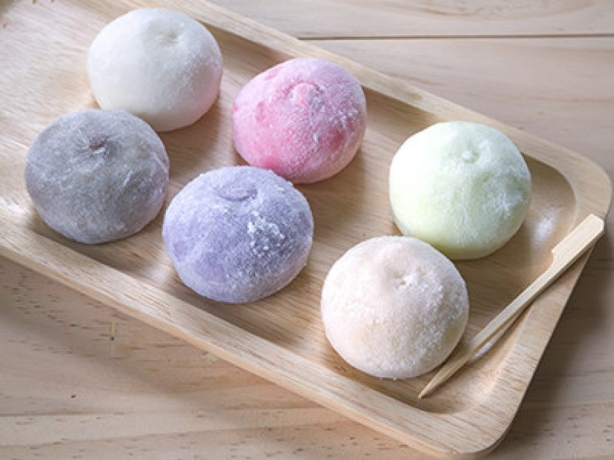

What is Mochi?
Mochi is a Japanese sweet, soft and chewy dessert. It's shaped into a small, round rice cake made of a particular type of sticky rice called mochigome. Mochigome is a short-grain japonica glutinous rice, and sometimes mochi includes other ingredients such as milk, sugar and cornstarch. Mochigome is a sweeter type of rice compared to the regular steamed rice.
Origin
The mochi-making method originates in China, where glutinous rice has been cultivated and used for thousands of years. This system was used by a number of Indigenous Chinese tribes as part of their traditions. In legend, the first mochitsuki ceremony took place after the Kami were said to have fallen to Earth, following the birth of rice cultivation in Yamato during the Yayoi period. In the mochi's production, red rice was the original variation. It was eaten exclusively by the emperor and nobles at this time because of its status of good fortune. During the Japanese Heian era, mochi was used as a "food for the gods" and as a religious offering in Shinto rituals conducted by nobles. Besides the good fortune, Mochi was also known as a talisman for happy weddings.
The first documented mochi reports for use as part of New Year's festivities are all from the Japanese Heian Period. The nobles of the royal court claimed that long stretches of freshly made mochi symbolised long life and well-being, whereas dried mochi assisted to strengthen an individual's teeth. The details of this can be located in the earliest Japanese book, The Genji Story.
Mochi is still a local delicacy enjoyed all across the Japanese New Year because during this time it is available and eaten abundantly. Kagami mochi, is placed every year on the family shrines on December 28. The Kagami mochi consists of two mochi, each with an orange, placed above of each other. The circular kagami mochi rice cakes on just this day, which the samurai traditionally performed, would have been destroyed, thus reflecting the emergence of a reflection and the conclusion of the New Year festivities.
Traditions
New Year
Kagami mochi has typically been torn apart and consumed in a ceremony known as Kagami Biraki, the opening mirror.
Zoni is a soup made with rice cakes and consumed during New Years. Zoni includes vegetables such as taro, cabbage, honeymoon and kamaboko in white and red colours. Kinako mochi is typically served as a sign of fortune on New Year's Day.
In order to prepare the recipe, the mochi is roasted on a flame or stove and then immersed in water, then covered in sucrose and Kinako.
Spring Season
In Japan, the cherry blossom (sakura) is symbolic of the start of full summer. Sakura mochi is a pink Mochi, covered in a delicious, salty cherry leaf, and rolled around sweet Anko. The recipe is typically made throughout the springtime.
Children's Day
On May 5th in Japan, Children's Day is celebrated. The Japanese support children's joy and very well-being during this day. For this festival, Kashiwa-mochi and Chimaki are specially made. Kashiwa-mochi is a white mochi, surrounded by a sweet Anko, and covered inside a Kashiwa oak leaf.
Girl's Day
A symbolic dessert offered on the days before Hinamatsouri or the "Girls' Day" in Japan, Hishi mochi is a cultural practice offered. Hishi Mochi is a red, green and white mochi. The multiple layers of jasmine, water caltrop and mugwort are tinted.
More Information!
For more information, click here!